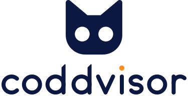
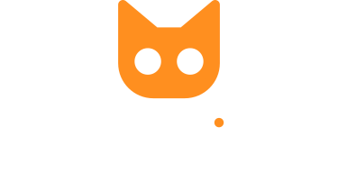

¿Cuánto vendiste ayer? Si tuviste que sacar el cuaderno, conversemos.
Identidad de marca · versión 3 · noviembre de 2026
El leal felino que cuida tu negocio.
Esta página explica quién es Coddvisor, cómo habla y cómo se dibuja. Sirve para que cualquier integrante del equipo, o una imprenta, use la marca sin tener que preguntar.
1 · Propósito y personalidad
Que quien dirige un negocio pequeño sepa cada día cómo le va.
Coddvisor es un sistema de gestión para micro y pequeñas empresas del Perú: venta, caja, inventario, comprobantes electrónicos y planilla en un solo lugar. Nace dentro de un negocio real y lo atiende un equipo que conoce el producto y conversa en persona con cada negocio.
De dónde viene el nombre
Coddvisor une dos palabras. Codd, por Edgar F. Codd, el científico que en 1970 propuso guardar la información en tablas que se relacionan entre sí; así ordenan sus datos casi todos los sistemas de gestión de hoy. Y advisor, que en inglés es «consejero». Dentro de advisor queda además la palabra visor: lo que te deja ver. El doble sentido es a propósito: Coddvisor te aconseja y te deja ver cómo va tu negocio, apoyado en datos bien ordenados.
Cercana
Habla como la persona de confianza que te ayuda a cuadrar la caja, no como un banco.
Clara
Una idea por frase. Si una dueña de bodega no lo entiende a la primera, está mal escrito.
Austera
No promete de más ni adorna. Dice lo que ya funciona y lo que todavía no.
Atenta
Como el gato de la tienda: se queda mirando el negocio cuando tú ya cerraste.
A quién le habla
A quien dirige un negocio de 1 a 50 personas: una boutique con dos sedes, un taller de confección, una ferretería de barrio. Vende todos los días, anota en un cuaderno o en una hoja de cálculo y decide de memoria. No tiene un área de sistemas ni tiempo para un curso.
A quién no le habla
A la gerencia de sistemas de una empresa grande, ni a quien busca un programa contable para un estudio. Si un texto solo lo entendería un contador o un programador, no es para esta marca.
2 · Tono de voz
Hablamos como se habla en el mostrador.
Tratamos de «tú». Usamos las palabras del negocio (caja, vuelto, talla, sede, boleta), no las del software. Las cifras siempre con su fuente o su fecha.
Así sí
Así no
Portada del sitioSabe cada día cuánto vendiste, cuánto hay en caja y qué te falta reponer.
Solución integral de clase mundial que potencia la transformación digital de tu empresa.
Mensaje de errorNo pudimos enviar la boleta a SUNAT. Quedó guardada y la reenviamos sola en unos minutos. No tienes que hacer nada.
Error 0x34: fallo en la transmisión del CPE. Contacte al administrador.
Lo que todavía no hayHoy la planilla calcula el régimen de pequeña empresa. El régimen general llega después.
Planilla completa para todo tipo de empresa.
Invitación a probar¿Quieres verlo con los datos de tu tienda? Vamos a tu local y lo probamos juntos.
¡Agenda YA tu demo con un ejecutivo de ventas y aprovecha esta oferta irrepetible!
Palabras que usamos
Integrante o colaborador. Asesor comercial. Sede, tienda o boutique. Cliente. Encargado de sede o líder de equipo. Desarrollo Organizacional.
Palabras que no usamos
Empleado, jefe, sucursal, vendedor, RRHH. Tampoco «solución», «ecosistema», «potenciar», «robusto» ni signos de exclamación en fila.
3 · El logo
Dos orejas, dos ojos que no se cierran.
El isotipo es la cabeza de un gato hecha de una sola mancha, con dos huecos redondos: sus ojos, siempre abiertos. Son el «visor» del nombre: un gato que mira por tu negocio. El gato tiene una historia real y un nombre: Aventurero, la leal mascota de nuestra oficina, a quien muchas veces le decimos Aventura. Se quedaba hasta altas horas de la noche acompañando al equipo y le gustaba subirse a los teclados. Y se parece a algo que nuestros clientes conocen: en muchas bodegas y talleres del Perú hay un gato que cuida la mercadería. Eso hace Coddvisor con las cuentas.
Es sólido y no una línea por una razón práctica: una línea fina se borra en la pestaña del navegador, en una ticketera o en un sello. Una mancha con dos huecos se reconoce igual a 16 píxeles que en un letrero.
Versiones
Horizontal · la principal, sobre fondo claro

Vertical · espacios cuadrados
Ícono · app y foto de perfil
Para fondo oscuro · aquí el gato es ámbar
Un color · sellos, fotocopias, ticketera, bordado
Sobre ámbar · el logo va en cobalto (7,5 a 1)
Cuándo el gato es ámbar y cuándo es azul
El gato es ámbar donde el ámbar se ve: sobre cobalto u otro fondo oscuro, y dentro del ícono. Sobre fondo claro va en cobalto, porque el ámbar sobre blanco casi no se distingue (2,2 a 1). El ícono de la pestaña del navegador sigue la misma regla: es el gato sin fondo, en cobalto cuando el navegador está en tema claro y en ámbar cuando está en tema oscuro. Para que la gente recuerde al gato en ámbar, el ícono es la pieza que más debe verse: en la app y en el perfil de redes. Las palabras «gato naranja» no se usan como lema ni como nombre: ya hay marcas peruanas con esas palabras.
Sobre un fondo ámbar, todo el logo va en cobalto: en blanco no se lee (2,3 a 1). El logo en blanco se reserva para fotos oscuras; el azul real no se usa como fondo del logo.
La palabra
«coddvisor» no sale de una tipografía: está dibujada letra por letra, con un trazo redondo y parejo. Cada d termina arriba en un corte de 40°, el mismo ángulo de la oreja del gato. Por eso nunca se vuelve a escribir con el teclado: siempre se usa el archivo. En un texto corrido se escribe «Coddvisor», con mayúscula.
El gato va con la palabra
En letreros, tarjetas, uniformes, empaques, documentos y anuncios va siempre el logotipo completo: el gato junto a «coddvisor». El gato se separa de la palabra solo en cuatro lugares: el ícono de la aplicación y el interior del sistema, la foto de perfil, la pestaña del navegador y los espacios donde la palabra ya no se lee (ver tamaños mínimos). En los tres primeros el nombre aparece al lado de todos modos, porque lo pone el teléfono, la red social o el navegador.
La razón: una cabeza de gato la usan otras marcas de tecnología, también en el Perú. Lo que hace única a esta marca es el gato junto a su nombre.
ASÍ SÍ · en un letrero o una tarjeta
ASÍ NO · el gato solo
Construcción
- Una sola mancha. Sin líneas ni contornos: la cabeza es una forma llena, con las puntas de las orejas apenas redondeadas.
- Dos huecos iguales. Círculos perfectos, a la misma altura.
- Simétrico. La mitad derecha es el espejo de la izquierda.
- Tres rasgos que lo hacen propio y que no se cambian: las orejas son las esquinas de la cabeza, la frente es plana, y sobre oscuro siempre es ámbar.
- La muesca entre las orejas viene del signo
>_que tuvo el primer sitio: la pendiente es de 40°, como el>, y la frente mide 12, como el_. Es una historia para la casa; al cliente no hace falta explicársela.
El gato se sienta con las letras
En el logotipo, el gato se apoya en la misma línea que las letras y su frente coincide con la altura de las minúsculas. Así se lee como una letra más y no como un dibujo pegado al lado.
Área de respeto
Alrededor del logo queda libre, como mínimo, un cuarto de su alto (más o menos el ancho de una oreja). Nada entra ahí: ni texto, ni otro logo, ni el borde del papel.
Tamaños mínimos
Por debajo de estos tamaños la palabra ya no se lee: ahí, y solo ahí, se usa el ícono sin la palabra.
Para la pestaña del navegador existe favicon.svg: es el gato solo, sin fondo, dibujado píxel por píxel en una cuadrícula de 16 para que a ese tamaño los bordes salgan nítidos. Cambia de color con el tema del navegador: cobalto en claro, ámbar en oscuro.
Usos incorrectos
No estirarlo ni aplastarlo
No cambiarle los colores
No usar el gato ámbar sin fondo sobre claro: no se distingue
No girarlo
No ponerle sombras, brillos ni contornos
No reescribir la palabra con una tipografía
4 · Paleta
Azul cobalto y ámbar, con dos azules de apoyo.
La marca se recuerda como «azul y naranja». El cobalto da la seriedad que necesita algo que emite comprobantes. El ámbar es el color vivo, el del gato y el del botón principal. El azul real y el celeste acompañan: uno para lo que se puede tocar, otro para lo que se mira.
Están equilibrados
El ámbar y el celeste tienen la misma luminosidad (70,2 y 70,2 de 100) y son colores opuestos en la rueda de color: ninguno aplasta al otro.
Son una sola familia de azul
El cobalto y el azul real tienen el mismo tono: uno oscuro para leer y uno vivo para actuar.
Proporción
De cada diez partes de una pantalla o una pieza: seis de blancos y neutros, tres de cobalto y una sola de color vivo.
| Nombre | Hex | Para qué | Contraste comprobado | |
|---|---|---|---|---|
| Marca | ||||
| Cobalto | #0B1841 | Texto, fondos oscuros, gato sobre claro | Sobre Fondo: 16,3 a 1 pasa | |
| Ámbar | #FF8F1F | Gato sobre oscuro, botón principal, punto de la i | Sobre Cobalto: 7,5 a 1 pasa · Sobre Fondo: 2,2 a 1 no pasa | |
| Azul real | #1554E0 | Enlaces, palabras resaltadas y botón secundario, sobre claro | Sobre Fondo: 5,9 a 1 pasa · Sobre Cobalto: 2,8 a 1 no pasa | |
| Celeste | #2CB7F5 | Gráficos, etiquetas y enlaces, sobre oscuro | Sobre Cobalto: 7,5 a 1 pasa · Sobre Fondo: 2,2 a 1 no pasa | |
| Derivados | ||||
| Ámbar tostado | #B05008 | Texto ámbar sobre fondo claro | Sobre Fondo: 5,0 a 1 pasa | |
| Celeste oscuro | #0A86C7 | Gráficos y trazos celestes sobre fondo claro | Sobre Fondo: 3,8 a 1, suficiente para un gráfico (mínimo 3) | |
| Hielo | #E3F5FE | Fondo de etiquetas y del botón secundario | Azul real encima: 5,6 a 1 pasa | |
| Celeste claro | #BFE8FC | Solo en la franja de siete tonos | No lleva texto encima | |
| Ámbar claro | #FFD3A1 | Solo en la franja de siete tonos | No lleva texto encima | |
| Neutros | ||||
| Texto secundario | #3A476B | Párrafos de apoyo | Sobre Fondo: 8,7 a 1 pasa | |
| Texto terciario | #5B6785 | Rótulos y notas | Sobre Fondo: 5,3 a 1 pasa | |
| Borde fuerte | #A7B0C6 | Campos y separadores marcados | — | |
| Borde | #D9DFEC | Tarjetas y líneas | — | |
| Superficie | #EEF1F7 | Bandas y zonas de apoyo | Cobalto encima: 15,2 a 1 pasa | |
| Fondo | #F7F9FC | Fondo general | — | |
| Estados | ||||
| Correcto | #0B6B41 | Texto sobre su fondo #DDF3E8 | 5,7 a 1 pasa | |
| Aviso | #5C4300 | Texto sobre su fondo #FFF1C2, siempre con ícono | 8,2 a 1 pasa | |
| Error | #C4203F | Texto sobre su fondo #FDE8EC | 4,9 a 1 pasa | |
Cómo leer el contraste. Es cuánto se distingue un color del que tiene detrás. Para texto normal hace falta 4,5 a 1 o más (norma internacional WCAG, nivel AA); para un dibujo o un gráfico, 3 a 1. Donde la tabla dice «no pasa», ese color no se usa de esa manera: para eso existen los derivados.
Tres reglas de uso
1. Un solo botón lleno
Cerrar cajaNueva venta
En cada pantalla hay un único botón de color pleno, el ámbar con texto cobalto (7,5 a 1). El segundo botón va en fondo hielo con texto azul. Dos botones llenos compiten entre sí.
2. El ámbar no avisa problemas
▲ Falta cuadrar S/ 8.00. Revisa el último vuelto.
✕ No se envió la boleta. La reenviamos sola.
El ámbar se parece al color de «cuidado», y quien no distingue bien los colores los ve idénticos. Por eso los avisos y errores llevan fondo claro, ícono y texto: nunca relleno naranja ni amarillo.
3. Cada color, sobre su fondo
EnlaceÁmbar tostado▮▮▮
EnlaceÁmbar▮▮▮
Sobre claro: enlaces en azul real, texto ámbar en tostado, gráficos en celeste oscuro. Sobre oscuro: enlaces y gráficos en celeste, y el ámbar puro. El celeste y el ámbar puros no se leen sobre blanco (2,2 a 1); el azul real no se lee sobre cobalto (2,8 a 1).
En modo oscuro el fondo pasa a #080F2E, las tarjetas a cobalto, la tinta a #EEF2FF (16,8 a 1) y el texto secundario a #A9B4D6 (9,1 a 1). El celeste y el ámbar quedan en 8,2 y 8,2 a 1.
Dónde viven los colores. En un solo archivo, colores.css. El sitio, el sistema y esta misma página los leen de ahí. Si un color cambia, se cambia en ese archivo y en ningún otro lugar.
La franja de siete tonos
Del cobalto al ámbar tostado, es el adorno propio de la marca: una línea delgada para firmar una pieza. Nunca es fondo ni reemplaza al logo.
#0B1841 · #1554E0 · #2CB7F5 · #BFE8FC · #FFD3A1 · #FF8F1F · #B05008
5 · Tipografías
Dos familias, las dos gratuitas.
Cuadra la caja
Space Grotesk
Para todo: títulos, párrafos, botones y pantallas del sistema. Pesos 400, 500, 600 y 700. Sus formas redondas combinan con la palabra del logo. Gratuita en Google Fonts, licencia abierta (OFL).
S/ 1 284.50
Space Mono
Solo para rótulos cortos en mayúsculas, códigos y comprobantes, donde cada cifra debe ocupar el mismo ancho para que las columnas cuadren. Gratuita en Google Fonts (OFL).
Si una de las dos no carga, el reemplazo es la tipografía del sistema de cada equipo. No se compra ninguna tipografía.
6 · Ejemplos aplicados
Cómo se ve en el día a día.
Son maquetas con datos inventados, no capturas del sistema.
Caja · Sede Centromar 18 nov
Ventas de hoyS/ 1 284.50
En cajaS/ 412.00
Boletas23
▲ Falta cuadrar S/ 8.00. Revisa el último vuelto antes de cerrar.
Cerrar cajaNueva ventaVer movimientos
Pantalla del sistema · un solo botón ámbar, el aviso con ícono y fondo claro, enlaces en azul real
BOUTIQUE EJEMPLO S.A.C.
RUC 20XXXXXXXXX
Av. Ejemplo 123, Lima
BOLETA DE VENTA ELECTRÓNICA
B001-00000123
1 Casaca denim M159.00
2 Polo básico S78.00
Op. gravada200.85
IGV 18 %36.15
TOTAL S/237.00
Gracias por tu compra
Emitido con
Comprobante · en un color, porque la ticketera imprime solo en negro. Manda el nombre del negocio; Coddvisor firma chico

Nombre ApellidoAsesor comercial
nombre@coddvisor.com · 9XX XXX XXX
coddvisor.com
nombre@coddvisor.com · 9XX XXX XXX
coddvisor.com
Tarjeta · 9 × 5,5 cm, anverso y reverso
Red social · cuadrado, una sola idea, logo abajo a la izquierda
7 · Coherencia con el sitio
Qué cambia en el sitio.
El primer sitio usaba azul petróleo, papel cálido y un naranja más apagado, con el signo >_ como ícono. Esta identidad los reemplaza: la paleta nueva manda. El cambio es chico porque el sitio ya tiene sus colores como variables en un solo lugar; basta con que lea colores.css.
- Colores: los de
colores.css. El fondo pasa de papel cálido a un blanco fresco. - Ícono de la pestaña:
favicon.svg, el gato sin fondo que cambia con el tema del navegador. De respaldo, para los navegadores que no leen ese formato,favicon-32-claro.png(cobalto) yfavicon-32-oscuro.png(ámbar).favicon-180.pnges el ícono de inicio del iPhone y conserva el cuadrado cobalto, porque ahí un fondo transparente se vuelve negro. - Marca de la barra superior: el logotipo horizontal; en tema oscuro, su versión para fondo oscuro.
- Rótulos: sin el
>_delante. Ese signo quedó dentro del gato, en la muesca entre las orejas. - Tipografías: no cambian.
8 · Archivos
Qué archivo usar en cada caso.
| Si es para… | Usa (carpeta logo/) |
|---|---|
| Web, documentos y presentaciones en fondo claro | coddvisor-logotipo-horizontal.svg |
| Lo mismo en fondo cobalto u oscuro | coddvisor-logotipo-horizontal-fondo-oscuro.svg |
| Espacios cuadrados: portada, letrero, tarjeta | coddvisor-logotipo-vertical.svg y -fondo-oscuro |
| Ícono de app y foto de perfil | coddvisor-icono.svg |
| Solo el gato, sin fondo para el interior del sistema; no va suelto en piezas impresas | coddvisor-isotipo.svg (claro) y -fondo-oscuro (ámbar) |
| Pestaña del navegador | favicon.svg, favicon-32-claro.png, favicon-32-oscuro.png |
| Ícono de inicio del iPhone | favicon-180.png |
| Ticketera, fotocopia, sello de goma, bordado | Los que terminan en -un-color.svg |
| Sobre un fondo ámbar | Los que terminan en -un-color.svg (logo en cobalto) |
| Sobre una foto oscura | Los que terminan en -negativo.svg (logo en blanco) |
| Solo la palabra | coddvisor-palabra.svg y sus variantes |
| Colores para el sitio y el sistema | ../colores.css |
Los SVG se pueden agrandar sin perder nitidez. Para corte en vinil o bordado, la imprenta debe «expandir trazos» antes de producir: la palabra está hecha con líneas de grosor fijo. Los colores están definidos para pantalla; antes de la primera impresión a color hay que pedir una prueba a la imprenta, porque el ámbar y el celeste salen más apagados en papel.